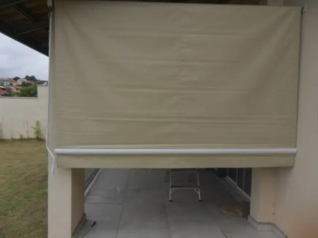

Toldo de tecido
Grande resistência ao sol e ao desbotamento, com baixa passagem de luz. Ideal para ambientes mais sofisticados — excelente na decoração e no conforto térmico.
- Luz
- Baixa passagem
- Destaque
- Conforto térmico
Proteção contra sol, vento e chuva para fachadas, varandas e áreas de lazer. Trabalhamos com dois tipos — veja qual combina com o seu espaço.

Grande resistência ao sol e ao desbotamento, com baixa passagem de luz. Ideal para ambientes mais sofisticados — excelente na decoração e no conforto térmico.

Embeleza o ambiente com exclusividade e leveza, especialmente em espaços que precisam, ao mesmo tempo, de luz natural e proteção contra a chuva.
Conte como é a sua fachada ou varanda e indicamos o melhor tipo para o seu espaço.